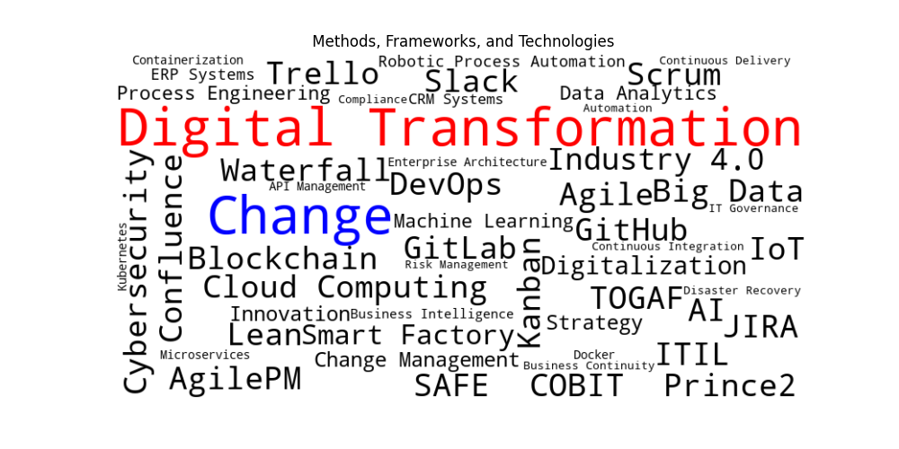

Introduction
The current job market indicates that there are many methods and frameworks used by various companies in different teams. However, the visibility of the use of a template or any framework to ensure coherence between all the different teams with their various methods and frameworks is not apparent. Therefore, this survey aims to investigate the current state of practice in Change and Transformation Management in Austria, with a focus on Coherence Governance During Organizational Transformation.
This webpage provides an overview of the framework for enterprise coherence governance during organizational transformation, focusing on the state of practice in change and transformation management in Austria.
The detailed content of the thesis, including research steps, methodology, findings, and conclusions, can be accessed through the Master Thesis link above.
Does coherence have the same importance as methods, frameworks, and tools during change and digital transformation?
Are the frameworks and methods required for IT jobs a limitation for collaboration and innovation, or do they facilitate them?
Overview: A brief summary of the project idea and its importance.
The current methodological landscape in the industry has become a cloud of digital transformation methods, frameworks, and tools.
Research Model
By following this research model:
Survey
Please participate in our survey to help us understand the current state of digital transformation frameworks in Austrian enterprises.
We appreciate your time and effort in providing valuable insights. Your feedback is crucial to our research on coherence governance during organizational transformation. Please fill out the survey below.
Thank you for participating in our survey! Your input is highly valued and will significantly contribute to our research. We appreciate your support and engagement.